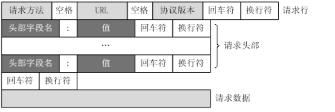
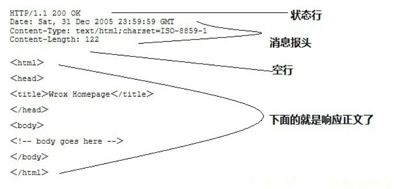

HTTP协议：
HTTP 是一个基于 TCP/IP 通信协议来传递数据（HTML 文件、图片文件、查询结果等）
HTTP->http:// + 80
HTTPS->https:// + 443
HTTP消息结构：
1.基于客户端/服务端（C/S）架构模型，是一个无状态请求/响应协议
2.HTTP使用统一资源标识符（Uniform Resource Identifiers，URI）来传输数据和建立连接
3.建立连接后，数据消息通过类似Internet邮件格式[RFC5322]和多用途Internet邮件拓展（MIME）[RFC2045]来传送。
客户端请求消息：

即：请求行、请求头、空行、请求数据
服务器响应消息：
状态行、消息包头、空行、响应正文

实例
下面实例是一点典型的使用GET来传递数据的实例：
客户端请求：
1 | GET /hello.txt HTTP/1.1 |
服务端响应:
1 | HTTP/1.1 200 OK |
输出结果：
1 | Hello World! My payload includes a trailing CRLF. |
HTTP请求方法（6种）：
| 序号 | 方法 | 描述 |
|---|---|---|
| 1 | GET | 请求指定的页面信息，并返回实体主体。 |
| 2 | HEAD | 类似于 GET 请求，只不过返回的响应中没有具体的内容，用于获取报头 |
| 3 | POST | 向指定资源提交数据进行处理请求（例如提交表单或者上传文件）。数据被包含在请求体中。POST 请求可能会导致新的资源的建立和/或已有资源的修改。 |
| 4 | PUT | 从客户端向服务器传送的数据取代指定的文档的内容。 |
| 5 | DELETE | 请求服务器删除指定的页面。 |
| 6 | CONNECT | HTTP/1.1 协议中预留给能够将连接改为管道方式的代理服务器。 |
| 7 | OPTIONS | 允许客户端查看服务器的性能。 |
| 8 | TRACE | 回显服务器收到的请求，主要用于测试或诊断。 |
| 9 | PATCH | 是对 PUT 方法的补充，用来对已知资源进行局部更新 。 |
HTTP响应头信息：
| 应答头 | 说明 |
|---|---|
| Allow | 服务器支持哪些请求方法（如GET、POST等）。 |
| Content-Encoding | 文档的编码（Encode）方法。只有在解码之后才可以得到Content-Type头指定的内容类型。利用gzip压缩文档能够显著地减少HTML文档的下载时间。Java的GZIPOutputStream可以很方便地进行gzip压缩，但只有Unix上的Netscape和Windows上的IE 4、IE 5才支持它。因此，Servlet应该通过查看Accept-Encoding头（即request.getHeader(“Accept-Encoding”)）检查浏览器是否支持gzip，为支持gzip的浏览器返回经gzip压缩的HTML页面，为其他浏览器返回普通页面。 |
| Content-Length | 表示内容长度。只有当浏览器使用持久HTTP连接时才需要这个数据。如果你想要利用持久连接的优势，可以把输出文档写入 ByteArrayOutputStream，完成后查看其大小，然后把该值放入Content-Length头，最后通过byteArrayStream.writeTo(response.getOutputStream()发送内容。 |
| Content-Type | 表示后面的文档属于什么MIME类型。Servlet默认为text/plain，但通常需要显式地指定为text/html。由于经常要设置Content-Type，因此HttpServletResponse提供了一个专用的方法setContentType。 |
| Date | 当前的GMT时间。你可以用setDateHeader来设置这个头以避免转换时间格式的麻烦。 |
| Expires | 应该在什么时候认为文档已经过期，从而不再缓存它？ |
| Last-Modified | 文档的最后改动时间。客户可以通过If-Modified-Since请求头提供一个日期，该请求将被视为一个条件GET，只有改动时间迟于指定时间的文档才会返回，否则返回一个304（Not Modified）状态。Last-Modified也可用setDateHeader方法来设置。 |
| Location | 表示客户应当到哪里去提取文档。Location通常不是直接设置的，而是通过HttpServletResponse的sendRedirect方法，该方法同时设置状态代码为302。 |
| Refresh | 表示浏览器应该在多少时间之后刷新文档，以秒计。除了刷新当前文档之外，你还可以通过setHeader(“Refresh”, “5; URL=http://host/path")让浏览器读取指定的页面。 注意这种功能通常是通过设置HTML页面HEAD区的＜META HTTP-EQUIV=”Refresh” CONTENT=”5;URL=http://host/path"＞实现，这是因为，自动刷新或重定向对于那些不能使用CGI或Servlet的HTML编写者十分重要。但是，对于Servlet来说，直接设置Refresh头更加方便。 注意Refresh的意义是”N秒之后刷新本页面或访问指定页面”，而不是”每隔N秒刷新本页面或访问指定页面”。因此，连续刷新要求每次都发送一个Refresh头，而发送204状态代码则可以阻止浏览器继续刷新，不管是使用Refresh头还是＜META HTTP-EQUIV=”Refresh” …＞。 注意Refresh头不属于HTTP 1.1正式规范的一部分，而是一个扩展，但Netscape和IE都支持它。 |
| Server | 服务器名字。Servlet一般不设置这个值，而是由Web服务器自己设置。 |
| Set-Cookie | 设置和页面关联的Cookie。Servlet不应使用response.setHeader(“Set-Cookie”, …)，而是应使用HttpServletResponse提供的专用方法addCookie。参见下文有关Cookie设置的讨论。 |
| WWW-Authenticate | 客户应该在Authorization头中提供什么类型的授权信息？在包含401（Unauthorized）状态行的应答中这个头是必需的。例如，response.setHeader(“WWW-Authenticate”, “BASIC realm=＼”executives＼””)。 注意Servlet一般不进行这方面的处理，而是让Web服务器的专门机制来控制受密码保护页面的访问（例如.htaccess）。 |
HTTP状态码：
常见状态码：
- 200 - 请求成功
- 301 - 资源（网页等）被永久转移到其它URL
- 404 - 请求的资源（网页等）不存在
- 500 - 内部服务器错误
| 分类 | 分类描述 |
|---|---|
| 1** | 信息，服务器收到请求，需要请求者继续执行操作 |
| 2** | 成功，操作被成功接收并处理 |
| 3** | 重定向，需要进一步的操作以完成请求 |
| 4** | 客户端错误，请求包含语法错误或无法完成请求 |
| 5** | 服务器错误，服务器在处理请求的过程中发生了错误 |